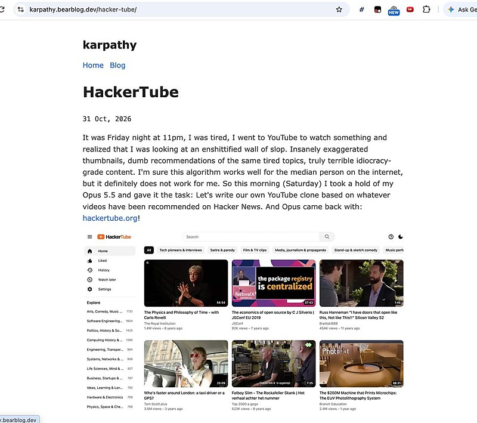

AI 日报 · 11月2日
长周期 Agent 靠记忆接力，关键动作仍由人拍板
Latent Space 访谈展示财富管理 Agent 如何跨日交接、保留审计记录；Karpathy 的 HackerTube 和 Builder 讨论则把注意力放到交付结果与推理强度的取舍。
长周期 Agent
人类审批
工作记忆
开源工具
3
Builder 动态
3
今日上榜项目
3
重点原文
1
公开视频
今日要点
任务可以跨十天，但不需要连续运行十天
Arca 的 Aman Singh 在 Latent Space 访谈中介绍：客户状态、待办和责任人由内部记忆系统持续记录；Agent 做分析与跟进，交易和资金移动仍由人类顾问处理。这是受访团队的实践描述，并非独立效果评测。
交付一个可用产品，比单次生成代码更能检验能力
Karpathy 在 10 月 31 日的原文中称，他用 Claude Code 与 Opus 5.5 构建 HackerTube，整理 Hacker News 评论里的视频推荐，并亲自处理 API key、服务器与域名等环节。文中的用时和视频数量均为作者自述。
深度对话
Latent Space：让 Agent 接力，让顾问把关
Latent Space 在 AI Engineer New York 访谈 Arca 的 Aman Singh。以下依据原频道视频、节目原文和中央 feed 逐字稿整理；产品流程与效果为受访者陈述。
保存业务状态，而不只是对话历史
Arca 记录每位客户当前事项、下一步、长期目标和责任人，让新一轮 Agent 工作能接住上一轮的进展。
模型按内部任务评测选择
团队自建运行框架，用自己的基准判断模型是否适合具体工作，并保留切换供应商的空间；公开榜单不是唯一依据。
高风险动作交由人处理
受访者说，Agent 可以分析税务和资产配置方案，但交易及资金移动由顾问执行；安全限制采用确定性规则，数据写入另有验证。
把审计记录变成默认能力
Agent 与人工在系统中的每次变更都留下操作、责任主体和时间记录；外部邮件与文件还会经过提示注入检查。
资讯精选
安全披露与检索基础设施
OpenAI｜计划定期发布社区安全报告
10 月 30 日公告承诺于 2027 年初发布首份报告，覆盖 2026 年下半年，并拟每六个月更新一次。当前是披露计划，不应表述为报告已经发布。
Cloudflare｜AI Search 开始按量计费
Cloudflare 10 月 1 日的更新说明将于 11 月 1 日开始计费，并列有每月包含用量；新建实例默认使用混合检索。实际费用应按官方价格页和账户用量核对。
已检查 feeds.json 的四条中文 RSS。AI 前线 11 月 1 日简讯中的多项说法尚未找到对应原始公告，故未据此入稿；以下采用已核验的官方原文，并标注原始发布时间。
Builder 动态
交付结果、反馈循环与推理强度
Swyx｜HackerTube 使用中等推理强度
Swyx 指向 Karpathy 的 HackerTube，并指出作者在项目中使用 Opus 5.5 的 Medium 档。他认为推理强度更像可按任务调整的偏好，不能从单个项目推出统一最佳设置。

Swyx｜低推理强度配合批评循环
在另一条原帖中，他主张对吞吐受限的工作用低推理强度加批评循环。这是工作流偏好，不是对所有任务的性能比较。
Aaron Levie｜用过去做不到的结果衡量 AI
Box CEO 认为，AI 应帮助团队做出以前难以完成的原型、架构与业务流程，而不只是把原有任务做快。他强调这是对使用深度的判断，未给出可复现的量化对照。
GitHub Trending
金融建模、审计记录与离线语音


取 11 月 2 日 GitHub Trending 当前榜单，避开近三期重点项目。星标、分叉、语言和主题为本次 GitHub API 快照；功能按仓库自述，未独立测评。
今日思考
Arca 的实践说明，长周期任务不等于让模型连续运行数日；关键是记录状态、归属和下一步，同时把不可逆动作留给有权负责的人。Swyx 与 Aaron 的帖子则提醒，推理档位和产出质量要围绕实际任务验证。今日一问：你的 Agent 明天重新接手今天的工作时，能否说清它已做什么、下一步由谁决定、哪些动作仍需人工批准？
参考来源